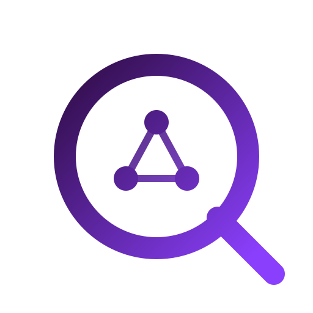

Finite-domain kernel
Trailed integer domains, central solver ownership, propagation queues, branch-and-bound, and brute-force oracle tests.

QaydYet another rich Constraint Programming solver
Qayd combines finite-domain propagation, global constraints, learning search, parallel optimization, and native collection models for routing, packing, assignment, and scheduling.
routes = model.list_vars(k, customers)
for r in routes:
model.add(cp.sum(r, lambda i: demand[i]) <= capacity)
model.minimize(cp.sum(
cp.sum_edges(r, lambda i, j: dist[i][j], start=0, end=0)
for r in routes
))$ qayd -t 10 -p 4 -v instance.xml.lzma
c vars 11842 constraints 29103
c workers 4 (portfolio 2, lns 1, incumbent 1)
c presolve reduced search 11842 -> 318 fixed
o 912
o 884
s SATISFIABLECompact, current, and grounded in the solver code.
Trailed integer domains, central solver ownership, propagation queues, branch-and-bound, and brute-force oracle tests.
XCSP3 instance solving through the CLI, plus a beta FlatZinc driver for MiniZinc workflows.
Positive extension tables use bitsets and residues; regular constraints use layered automaton filtering.
Coverage includes allDifferent, allEqual, ordered, lex, sum, count, nValues, cardinality, element, scheduling, packing, circuit, and slide families.
Lazy Clause Generation, watched clauses, shared incumbents, clause sharing, split jobs, objective probes, and LNS workers.
Native ordered lists, item and edge reductions, scans, windows, pair reductions, lexicographic objectives, and interval schedules.
Build, test, and run an example from the repository.
cargo build && cargo test
uv run examples/python/vrp.py
cargo clippy --all-targets -- -D warnings